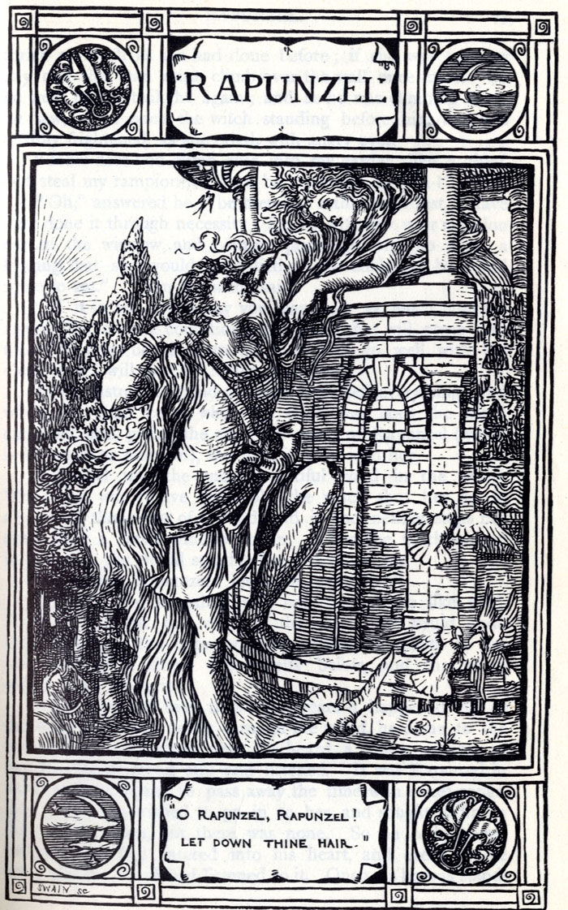

|
There were once a man and a woman who had long in vain wished for a child. At length the woman hoped that God was about to grant her desire. These people had a little window at the back of their house from which a splendid garden could be seen, which was full of the most beautiful flowers and herbs. It was, however, surrounded by a high wall, and no one dared to go into it because it belonged to an enchantress, who had great power and was dreaded by all the world. One day the woman was standing by this window and looking down into the garden, when she saw a bed which was planted with the most beautiful rampion (rapunzel), and it looked so fresh and green that she longed for it, and had the greatest desire to eat some. This desire increased every day, and as she knew that she could not get any of it, she quite pined away, and looked pale and miserable. Then her husband was alarmed, and asked, "What aileth thee, dear wife?" "Ah," she replied, "if I can't get some of the rampion, which is in the garden behind our house, to eat, I shall die." The man, who loved her, thought, "Sooner than let thy wife die, bring her some of the rampion thyself, let it cost thee what it will." In the twilight of the evening, he clambered down over the wall into the garden of the enchantress, hastily clutched a handful of rampion, and took it to his wife. She at once made herself a salad of it, and ate it with much relish. She, however, liked it so much---so very much, that the next day she longed for it three times as much as before. If he was to have any rest, her husband must once more descend into the garden. In the gloom of evening, therefore, he let himself down again; but when he had clambered down the wall he was terribly afraid, for he saw the enchantress standing before him. "How canst thou dare," said she with angry look, "to descend into my garden and steal my rampion like a thief? Thou shalt suffer for it!" "Ah," answered he, "let mercy take the place of justice, I only made up my mind to do it out of necessity. My wife saw your rampion from the window, and felt such a longing for it that she would have died if she had not got some to eat." Then the enchantress allowed her anger to be softened, and said to him, "If the case be as thou sayest, I will allow thee to take away with thee as much rampion as thou wilt, only I make one condition, thou must give me the child which thy wife will bring into the world; it shall be well treated, and I will care for it like a mother." The man in his terror consented to everything, and when the woman was brought to bed, the enchantress appeared at once, gave the child the name of Rapunzel, and took it away with her. Rapunzel grew into the most beautiful child beneath the sun. When she was twelve years old, the enchantress shut her into a tower, which lay in a forest, and had neither stairs nor door, but quite at the top was a little window. When the enchantress wanted to go in, she placed herself beneath it and cried, "Rapunzel, Rapunzel, Let down thy hair to me." Rapunzel had magnificent long hair, fine as spun gold, and when she heard the voice of the enchantress she unfastened her braided tresses, wound them round one of the hooks of the window above, and then the hair fell twenty ells down, and the enchantress climbed up by it. After a year or two, it came to pass that the King's son rode through the forest and went by the tower. Then he heard a song, which was so charming that he stood still and listened. This was Rapunzel, who in her solitude passed her time in letting her sweet voice resound. The King's son wanted to climb up to her, and looked for the door of the tower, but none was to be found. He rode home, but the singing had so deeply touched his heart, that every day he went out into the forest and listened to it. Once when he was thus standing behind a tree, he saw that an enchantress came there, and he heard how she cried, "Rapunzel, Rapunzel, Let down thy hair." Then Rapunzel let down the braids of her hair, and the enchantress climbed up to her. "If that is the ladder by which one mounts, I will for once try my fortune," said he, and the next day when it began to grow dark, he went to the tower and cried, "Rapunzel, Rapunzel, Let down thy hair." Immediately the hair fell down and the King's son climbed up. At first Rapunzel was terribly frightened when a man such as her eyes had never yet beheld, came to her; but the King's son began to talk to her quite like a friend, and told her that his heart had been so stirred that it had let him have no rest, and he had been forced to see her. Then Rapunzel lost her fear, and when he asked her if she would take him for her husband, and she saw that he was young and handsome, she thought, "He will love me more than old Dame Gothel does;" and she said yes, and laid her hand in his. She said, "I will willingly go away with thee, but I do not know how to get down. Bring with thee a skein of silk every time that thou comest, and I will weave a ladder with it, and when that is ready I will descend, and thou wilt take me on thy horse." They agreed that until that time he should come to her every evening, for the old woman came by day. The enchantress remarked nothing of this, until once Rapunzel said to her, "Tell me, Dame Gothel, how it happens that you are so much heavier for me to draw up than the young King's son---he is with me in a moment." "Ah! thou wicked child," cried the enchantress "What do I hear thee say! I thought I had separated thee from all the world, and yet thou hast deceived me." In her anger she clutched Rapunzel's beautiful tresses, wrapped them twice round her left hand, seized a pair of scissors with the right, and snip, snap, they were cut off, and the lovely braids lay on the ground. And she was so pitiless that she took poor Rapunzel into a desert where she had to live in great grief and misery. On the same day, however, that she cast out Rapunzel, the enchantress in the evening fastened the braids of hair which she had cut off, to the hook of the window, and when the King's son came and cried, "Rapunzel, Rapunzel, Let down thy hair," she let the hair down. The King's son ascended, but he did not find his dearest Rapunzel above, but the enchantress, who gazed at him with wicked and venomous looks. "Aha!" she cried mockingly, "Thou wouldst fetch thy dearest, but the beautiful bird sits no longer singing in the nest; the cat has got it, and will scratch out thy eyes as well. Rapunzel is lost to thee; thou wilt never see her more." The King's son was beside himself with pain, and in his despair he leapt down from the tower. He escaped with his life, but the thorns into which he fell, pierced his eyes. Then he wandered quite blind about the forest, ate nothing but roots and berries, and did nothing but lament and weep over the loss of his dearest wife. Thus he roamed about in misery for some years, and at length came to the desert where Rapunzel, with the twins to which she had given birth, a boy and a girl, lived in wretchedness. He heard a voice, and it seemed so familiar to him that he went towards it, and when he approached, Rapunzel knew him and fell on his neck and wept. Two of her tears wetted his eyes and they grew clear again, and he could see with them as before. He led her to his kingdom where he was joyfully received, and they lived for a long time afterwards, happy and contented. |
TL;DR:https://mysite.du.edu/~fdallas/its2410/hw3_grimms/rapunzel.html A childless couple who wanted a child, lived next to a walled garden which belonged to an enchantress. The wife, at long last pregnant, notices some rapunzel planted in the garden and longs after it to the point of death. Her husband goes to gather some for her, and encounters the enchantress, Dame Gothel, who accuses him of thievery. He asks for mercy, and the enchantress gives him some rapunzel to take home on the condition that the child his wife is pregnant with be surrendered to her at birth. He agrees; the child is born; the enchantress appears, names the child Rapunzel, and takes her away. When Rapunzel reaches her twelfth year, the enchantress shuts her away into a tower in the middle of the woods. When she goes to visit each day with Rapunzel, the enchantress bids Rapunzel let down her long plaited gold hair, and then climbs up it into the tower,"Rapunzel, Rapunzel, let down thy hair." One day a King's son hears Rapunzel singing from the tower, looks for an entrance, and leaves, finding no way in. He often returns to listen to her sing, and one day sees the enchantress visit, learning thusly how to gain access to Rapunzel. He bids Rapunzel let her hair down, and he climbs up, makes her acquaintance, and asks her to marry him. She agrees. Together they plan a way to get her out of the tower: he will come each night, avoiding the enchantress, who visits in daylight: each night he will bring silk, which Rapunzel will gradually weave into a ladder. The enchantress learns of the King's son's visits when Rapunzel asks why it is easier for her to draw him up. Dame Gothel cuts off Rapunzel's braided hair and sets her in a desert.When the King's son calls that night, the enchantress lets the braids down, and he climbs up. She tells him he will never see Rapunzel again. He leaps in despair from the tower and is blinded by the thorns below.He wanders about for some years before he hears Rapunzel's voice, and finds her with twins to which she has given birth. Her tears restore his sight, and he leads her to his kingdom, where they lived contentedly for some years, or to use the vernacular: "they lived happily ever after".  |